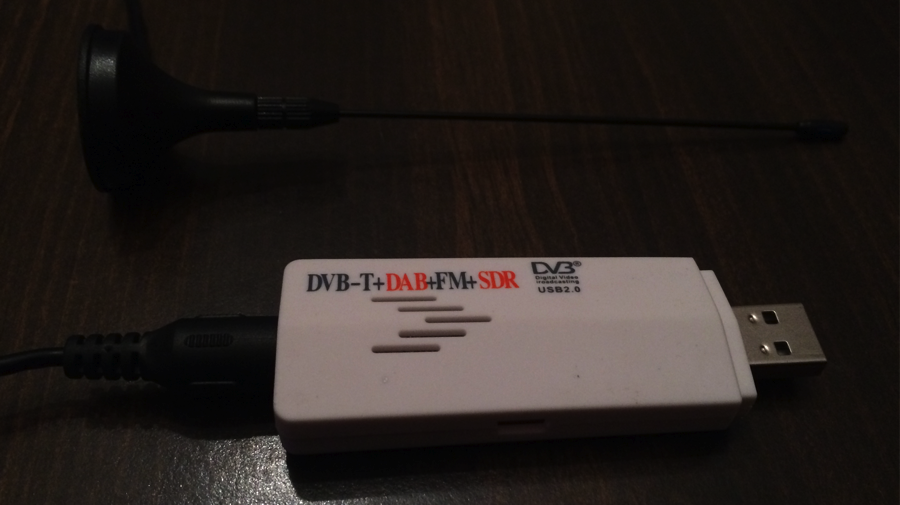
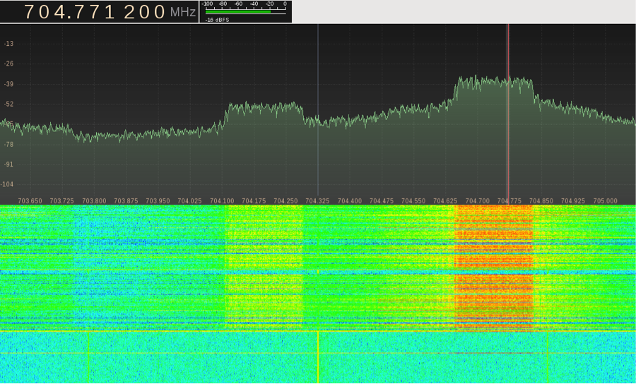
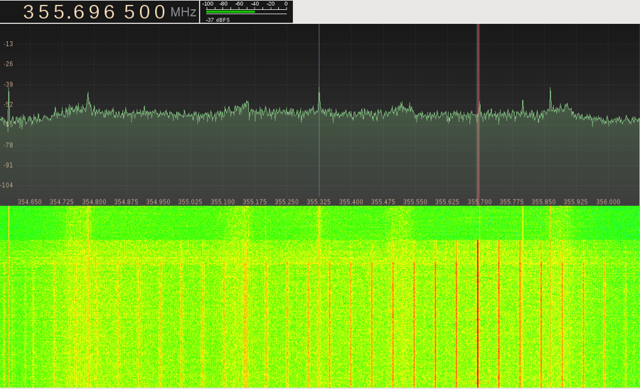

An Analysis of Emissions from Electronic Devices
Abstract
When an electrical current goes though a wire, it causes an electromagnetic field around that wire. This means that any electronic device is broadcasting the signals going through it. In the early 1960’s, agents from the NSA tried to exploit this electric property and attempted to eavesdrop on communications. Later, through Van Eck phreaking, it became possible to recover the image from a CRT monitor from a distance. The high voltage and frequencies used in CRT monitors made it “easy” to recover the signal. However, it was showed in 2004 that signals from conventional LCD displays could also be recovered. Signals from electronic keyboards have also captured. However eavesdropping on electromagnetic emissions does not only extend to monitors and keyboards; every electronic device can be listened to by tuning in to the correct frequency. Today, ultra-cheap software defined radios (SDR) (radios that can tune to a very wide frequency range ☺ and output the raw signal to software for analysis) can be used to listen to various signals from electronic devices. Melissa Elliott from Veracode conducted a presentation at Defcon this summer where she discussed how she used an SDR to tap into various communications. The fact that a $10 radio can be purchased to tap into potentially very private communications is astounding and deserves more research into.
1: Introduction
One of the first things that electrical engineers learn is that when a current flows through a conductor, it creates an electromagnetic field. This means that whenever an electronic device is operating, it is broadcasting signals into the air about its operation. Even though this is a well-known electrical property, most people would never think that their electronics are broadcasting signals which can reveal sensitive information. However, this electrical property is the basis for a secret project conducted by the NSA called TEMPEST.
1.1: Discovery of Compromising Emissions
During World War II, secure communications relied on a mixing device, created by Bell Telephone, to encrypt sensitive information. An engineer at Bell was conducting tests on the mixing device when he noticed that an oscilloscope would display a spike every time the mixing device stepped. The engineer took a closer look at the problem and discovered that he could recover the plaintext message just by looking at those spikes. This was the first public discovery of compromising emissions.
After discovering the problem, Bell was tasked with discovering how these supposedly secure devices were leaking information and how to solve the problem. Bell discovered that electrical equipment would leak information through one of two ways: either by radiating information in space or by causing detectable interference on connected wires such as power lines. They also discovered that these problems could be minimized by using shielding to reduce the broadcast of signal in space and filters to reduce interference on connected cables. However, the shielding and filters that Bell created to secure their mixing device required significant modifications to the device that were impracticable and expensive so they were never adopted. Instead military personnel were simply instructed to secure a 100-foot zone around the transmitter in the hopes that it would be enough distance to prevent interception of sensitive signals.
1.2: Project TEMPEST
After WWII ended, this discovery by Bell Telephone lead the NSA to create the TEMPEST project to better understand the source of these emissions and to find more effective methods to eliminate them. During its analysis the NSA discovered that all electrical equipment from motors, to circuits radiated signals. Some seemingly secure crypto systems even revealed the encryption key! A lot of work was then put into securing these systems; filters were placed between equipment and power lines to prevent the signal from being conducted on power lines and shielding was placed around cables and equipment containing sensitive data. Some equipment was even completely redesigned to become more secure.
Over time, the TEMPEST program became more than just research into the problem of compromising emissions, it became a set of standards by which to measure electronic equipment. Secret TEMPEST standards were created in order to manufacture electrical equipment that did not leak sensitive data. These standards are still in use today, and devices that adhere to TEMPEST standards, should in theory, leak less sensitive emissions than non-TEMPEST devices.
1.3: Van Eck Phreaking
The general impression was that TEMPEST related issues were not that relevant to the average citizen because prohibitively expensive equipment was needed to decode the signals. However, in 1985, a Dutch computer scientist named Wim Van Eck was able to recover the signal from a CRT monitor using less than one hundred dollars worth of equipment. Van Eck able was even able to do so from a few hundred feet away and claimed he could do the same from over a kilometer away using more expensive equipment. Van Eck used a TV receiver, which could be manually synchronized, and a regular CRT monitor to recover signals. In a proof of concept, he was able to recover CRT screen signals from executives in the British Broadcasting Corporation building in London using a van parked outside.
Van Eck’s discovery had vast implications! Emanating radiations could be used to compromise sensitive data not only on “secure” military equipment, but also on the screens that millions of citizens used! To make matters worse, only $100 dollars and little skill was needed in order to successfully recover CRT signals. The reason why CRT monitors were so vulnerable was due to the fact that a CRT system needs to amplify the video signal to hundreds of volts in order to properly control the electron beam. This made the emitted video signal from CRT’s trivial to identify and decode. In order to minimize the security risk related to CRT monitors, manufacturers increased the electromagnetic shielding in their products.
1.4: Modern Van Eck Phreaking
Over time, CRT screens began to be replaced by LCD screens, which were believed to be secure regarding compromising emissions because the video signal was no longer at high voltage. However, Professor Markus Kuhn from University of Cambridge was able to recover the signal from an LCD monitor in 2004 using less two thousand dollars worth of equipment. He was able to do so because LCD monitors rely on a digital video signal (instead of the analog video signal used in CRT displays). Digital signals in a computer are usually sent along a wire using baseband transmission meaning that the data is not modulated on a carrier wave and is centered around 0 hertz. However, sampling is needed in order to read a baseband transmission signal and this sampling causes the signal to be broadcast at frequencies that are multiples of the sampling frequency. By tuning to the correct frequency, Professor Kuhn was able to listen to the transmission going through the cable connecting the computer to the display and he successfully reconstructed the image on the LCD. Professor Kuhn even claimed that the reconstruction of digital LCD signals was clearer than the recovery of signals from CRT monitors. However, in order to recover the LCD signals, the antenna had to be in the same room as the screen. It is very likely that more expensive equipment would allow reconstruction of the LCD signal from greater distances.
Kuhn’s discovery meant that the security problems associated with CRT’s were back and that any modern computer could be eavesdropped on! The only way to secure devices was to increase the shielding on wires containing sensitive information and to increase shielding on the device itself.
1.5: Keyboard Recovery
Analysis of compromising emissions has not only been limited to encryption modules and screens, but research has also been done to recover the keystrokes from a keyboard. Professors Martin Vuagnoux and Sylvain Pasini from the EPFL in Lausanne, Switzerland were able to successfully recover the signal send from a wired keyboard in 2009. During their research, they devised four methods to accurately recover keystrokes from both wired and wireless keyboards. Their most effective method was able to reconstruct keystrokes with 95% accuracy from up to twenty meters away. They were even able to do this through walls! An interesting fact that these professors noticed was that when the computer with the keyboard was connected to mains power (instead of running off a battery) the signal strength of the recovered signal increased significantly. This corroborates the NSA findings that electronic equipment also sends out compromising emissions conducted through power lines.
Vuagnoux and Pasini’s ability to recover keystrokes has huge implications for computer security. The main input method to the computer, the keyboard, can now be monitored which renders almost all conventional computer security useless. The research from Vuagnoux and Pasini truly shows that all electrical equipment is vulnerable to having its emissions snooped on unless TEMPEST measures are put in place.
2: Message to the Community
All of this research into electronic equipment emissions is important for anyone who wants to use electronics securely. Everyone that doesn’t use TEMPEST rated equipment is vulnerable to being snooped on. This is particularly important today because, until recently, most of the research into emissions from electronics was conducted by government agencies (such as the NSA) and universities. This was mostly due to the fact that the radios needed to listen to these signals were relatively expensive (about a thousand dollars). Now, with the availability of cheap software defined radios such as the Realtek RTL2832U, anyone can start exploring the emissions that their electronics give off.
2.1: Why is this important?
These software defined radios only cost ten dollars and they look like simple USB sticks. Furthermore they can tune in to a very wide range of frequencies (from about 50 MHz to 2200MHz). They were originally developed to be cheap TV tuners, but it was discovered that the raw signal could be extracted from the dongle and interpreted using software. An online community was then formed to support informal research into exploring the electromagnetic spectrum using these RTL-SDRs (RTL chip based software defined radios). These dongles have been used for a very wide variety of purposes including: listening to weather satellites, tracking planes and ships using their location systems, decrypting GSM communications, tracking 4G LTE users, listening to police scanners, listening to radio radio, and examining emissions from electronic devices.
Figure 1: RTL-SDR USB Dongle with Antennae
2.2 Analyzing Emissions with the RTL-SDR
Melissa Elliott, a researcher at Veracode, conducted extensive analysis of the RTL-SDR and its capabilities to examine emissions from electronics. She reported her findings in 2013 at the Defcon conference, where she demonstrated that the RTL-SDR was able to pick up the clock signal of a cheap, non-shielded computer while looking at common FM radio stations. Throughout her research, Elliott determined that she could listen in on capacitive touchscreens, button presses, LED’s changing colors, screen activity, hard drive activity, and even RAM! Elliott even tried to reconstruct the screen on her laptop using the screen emissions, but the low sampling rate of the RTL-SDR prevented her from obtaining a clear picture.
Her findings point towards the idea that the RTL-SDR is not powerful enough and doesn’t have a high enough sampling speed to accurately recover signals from electronic devices. However, these emissions are still a security threat when using RTL-SDR radios because even though they can’t be used to completely reconstruct the data, there is a correlation between various received signals and the state that a electric device is in. By simply looking and listening to these correlated emissions, a skilled operator would be able to determine between the various states that a device is in. For example, it would be trivial to distinguish whether a device is on or off and with a little more skill and practice an analyst could determine whether a screen is displaying a complex or mostly uniform image simply by listening to the signal.
Another idea that Elliott brought up is that since every piece of equipment exhibits a different electromagnetic signature, by knowing which devices a person carries, they can be tracked by monitoring the movement of their electronics.
2.3: My Findings
After having purchased an RTL-SDR, I set out to examine the information that I could gather by analyzing the electromagnetic spectrum. Most of the research I conducted had very similar results to that of Melissa Elliott. By analyzing the 4G LTE frequencies, I was able to determine whenever my iPhone was using 4G. I was even able to determine when my phone was accessing the network while my phone was outside and across the street. Analyzing this signal could allow an attacker to determine when my phone was on and when I was actively using it. There are also open source programs that use the RTL-SDR to track 4G-LTE cell phones within range. The picture below shows my iPhone accessing the ATT 4G network when streaming a YouTube video.
Figure 2: iPhone connecting to ATT 4G network
I was also able to find a frequency which correlated with screen activity. This was particularly interesting because by listening to the AM demodulation of the signal I could determine when the screen was changing its display. The pitch of the signal seemed to increase whenever there was a complex image on the screen and became a lower tone when the color on the screen became more uniform. Using this emitted signal, I was also able to determine whether a computer screen was operating in command line mode or full GUI mode. The picture below shows the transition from the regular desktop, to the command line during shutdown procedures, to a shutdown computer with the screen off.
Figure 3: Computer screen going from regular desktop, to full screen command line, to the screen being off
3: Action Steps of What Can I Do?
Preventing emissions from electronic devices is a complicated and very expensive task. As Bell Telephone found out in WWII, it is also very difficult to retrofit existing equipment with the necessary filters and shielding. Furthermore, buying equipment that is TEMPEST rated is prohibitively expensive. However, there are various steps that individuals can take to try to minimize the spread of compromising emissions from electronics:
- When purchasing a computer, choose a computer with a metal case because they seem to have fewer emissions than computers with a plastic case. In my research, I saw that signals emanating from an old plastic MacBook were much stronger than those emanating from an aluminum unibody MacBook Pro. This could be due to the fact that the metal computer case acts somewhat like a faraday cage.
- Put your electronics in a faraday cage when not in use (putting them in a microwave or wrapping them in tin foil) to minimize the signals being sent out. The microwave method seems to be more effective than tin foil at blocking emanating signals.
- Power cell phones and computers off rather than putting them to sleep. Computers and cell phones both continue radiating emissions when in sleep mode.
- Disconnect the power cord and run the device from a battery to prevent sending signals along power lines.
- Use your computer in a faraday cage so that any emanating signals will be contained within the cage.
- Use computers away from large metal objects such as pipes, railings, air ducts, etc., which can capture and amplify the radiating emissions.
- Purchase shielded cables to minimize emission of signals along the cable.
- Encourage the development of new electronics with a focus on minimizing radiating emissions.
4: Conclusion
Compromising emissions from electronic devices are a big problem to securely using those devices. The NSA has even developed an entire program to examine these emissions and a set of standards to create electronics that minimize compromising emissions. Universities and researchers from around the world have also been analyzing emissions from equipment and they have been able to successfully reconstruct signals from cryptography equipment, CRT screens, LCD’s, and keyboards. The advent of cheap software defined radios has even allowed just about anyone to purchase the necessary equipment to begin analyzing the emissions given off by electronics. However, there are a few inexpensive methods that everyone can use to minimize the radiation of emissions from electronics. The most effective method to reduce these emissions would be the mass adoption of TEMPEST standards, which would require the development of cheaper filtering and shielding methods
References
- Elliott, Melissa. “DEF CON 21 Presentation By Melissa Elliott - Noise Floor Exploring Unintentional Radio Emissions - YouTube.” Youtube.com. Accessed October 31, 2013. http://www.youtube.com/watch?v=5N1C3WB8c0o.
- Kuhn, Marcus. “Electromagnetic Eavesdropping Risks of Flat-Panel Displays.” University of Cambridge, n.d. http://www.cl.cam.ac.uk/~mgk25/pet2004-fpd.pdf.
- NSA. “NACSIM 5000 Tempest Fundamentals.” Accessed December 18, 2013. http://cryptome.org/jya/nacsim-5000/nacsim-5000.htm.
- NSA. “Tempest: A Signal Problem,” n.d. http://www.nsa.gov/public_info/_files/cryptologic_spectrum/tempest.pdf.
- “Rtl-sdr – OsmoSDR.” osmocomSDR. Accessed October 31, 2013. http://sdr.osmocom.org/trac/wiki/rtl-sdr#no1.
- Van Eck, Wim. “Electromagnetic Radiation from Video Display Units: An Eavesdropping Risk?,” n.d. http://cryptome.org/emr.pdf.
- Vuagnoux, Martin, and Sylvain Pasini. “Compromising Electromagnetic Emanations of Wired and Wireless Keyboards.” EPFL. Accessed October 31, 2013. http://infoscience.epfl.ch/record/140523/files/VP09.pdf.